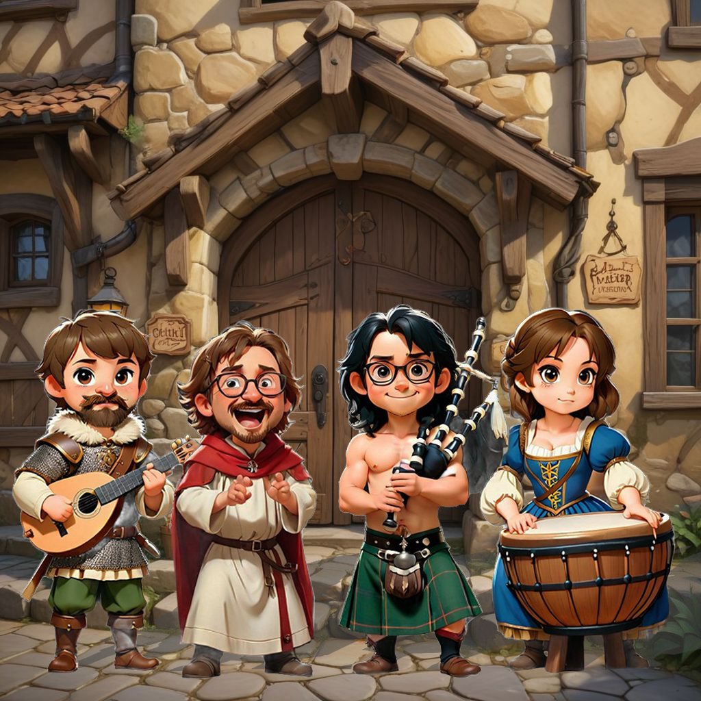

Wir, die Kelterer des Wahren Mets, sind eine mittelalterliche Folk-Rock-Band mit Sitz in Lübeck. Unsere Leidenschaft für Met, vom Trinken bis zum Herstellen, wollen wir nun auch auf Musik erweitern. Unser erstes Album, "Goldene Liebe", ist ein Zeugnis unserer Hingabe an das Handwerk der Kelterei. Wir verstehen uns als virtuelle Band und freuen uns die Welt mit Met zu erheitern.
Kelterer des Wahren Mets
So klingt der Wahre Met: Mittelalter Folk-Rock mit Honiggeschmack
Hör' doch mal rein:
